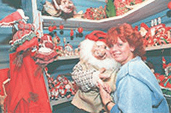

KGB har vært der. Den kinesiske kulturminister har vært der. Det samme har blaserte reiselivsjournalister fra Amerika. Vi snakker ikke om Harrods i London eller Eifeltårnet i Paris, men om Julehuset i Drøbak.Da Eva og Willy Johansen åpnet dørene til Julehuset for 7 år siden kunne de ikke i sin villeste fantasi drømme om følgene. For hva kan få CNN-reportere, diplomater, toppsjefer, regjeringsmedlemmer og sjefredaktører i verdensklasse til å besøke en "julebutikk" i Drøbakk...?.
Eva Johansen er omgitt av nisser og dverger og trollkjerringer i alle størrelser og fasonger. Hun blar i proppfulle permer hvor begeistrede gjester har satt sine hilsner og navnetrekk. Mange kommer igjen år etter år, og mange sender brev for å uttrykke sine følelser over hva de opplevde i Norge, Drøbak og Julehuset. Eva svarer dem alle. Slik har Eva skaffet seg venner over hele verden, og blir ofte invitert til julefeiringer i andre land. To år på rad har hun vært gjest i fødselsdagsselskapet til den japanske keiseren.
- Jeg tror ikke først og fremst det er nissefigurene alle disse menneskene er opptatt av. Men jul betyr noe spesielt for mennesker i hele verden. Jul forbindes med gode følelser, fred og glede. Jeg tror det er nettopp en slik atmosfære våre gjester opplever i Julehuset.
Like ved ligger også Julenissens postkontor som har fått sitt eget offisielle poststempel. En skulle vel tro at julenisser for det meste appellerer til barna, men Eva understreker at hit er det først og fremst de voksne som kommer. Det var på nære nippet at hun klarte å få den russiske presidenten på besøk. Utenriksdepartementet hadde opplegget klart og en russisk delegasjon kom og kikket på forholdene, men planene ble endret i siste omgang.
- Jeg er blitt overrasket over utlendingenes reaksjoner når de kommer hit til Drøbak. Selv de mest blaserte reiselivsjournalister viser stor interesse for hvordan vi lever her. De er imponert over den gamle trehusbebyggelsen og at vi lever så ekte. Ofte ønsker våre gjester å oppleve de enkle ting. En gang spurte vi noen japanere hva de ville ønske seg mer i Drøbak. Jo, de ville leie robåt, dra ut og fiske og grille fisken selv etterpå,sier Eva. Og til Julehuset kommer de tilbake gang på gang.